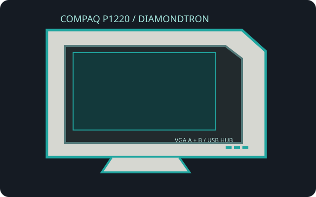

[ INDIVIDUAL COMPONENT // COMPAQ ]
Compaq P1220
A large-format Diamondtron NF professional CRT sold as a Compaq workstation display, with dual analog inputs and a USB hub.

IDENTIFICATION: Check the P1220 rear label, regional type and supply rating. Marketing diagonal is not viewable image size; figures below distinguish the nominal tube from the visible raster.
Specifications
| Exact model / tube | Compaq P1220; 21-inch nominal Diamondtron NF aperture-grille CRT, approximately 20-inch viewable diagonal, 4:3. |
|---|---|
| Grille pitch | 0.24 mm aperture-grille pitch. |
| Resolution / refresh | No fixed native raster. Typical high-resolution workstation mode is 1600 × 1200 at 85 Hz; maximum timing reaches 2048 × 1536 at 60 Hz. Use the user's-manual supported-mode table and avoid inferring refresh from a resolution alone. |
| Connectors | Two HD15 / DE-15 analog VGA inputs; integrated USB hub has one upstream and three downstream USB ports. The USB connection carries hub data, not video. |
| Power | AC mains via a grounded detachable cord; approximately 145 W operating (mode-dependent). The rear nameplate specifies local voltage/frequency and must take precedence. |
| Compatibility | Use analog RGB video from a VGA-capable source at a supported mode. Modern digital-only outputs require an active digital-to-VGA converter. The monitor's USB hub requires a separate host USB connection. |
Compatibility and safety
Choose the correct input and confirm both source scan frequency and sync are within limits. Do not treat the USB hub as a video interface. This is a heavy CRT with hazardous high-voltage circuitry; disconnect external power before cleaning and leave internal service to qualified CRT technicians.
Documentation and sources
- Compaq P1220 User ManualModel-specific operating, mode, connection and safety instructions.
- Compaq P1220 QuickSpecsCompaq display specifications and configuration reference.